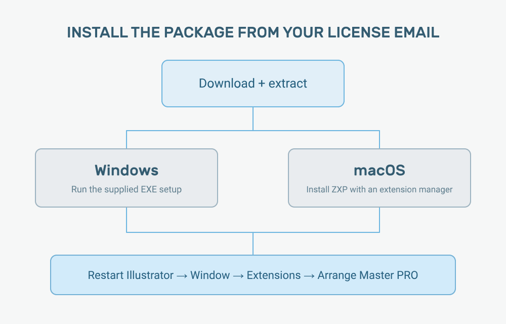
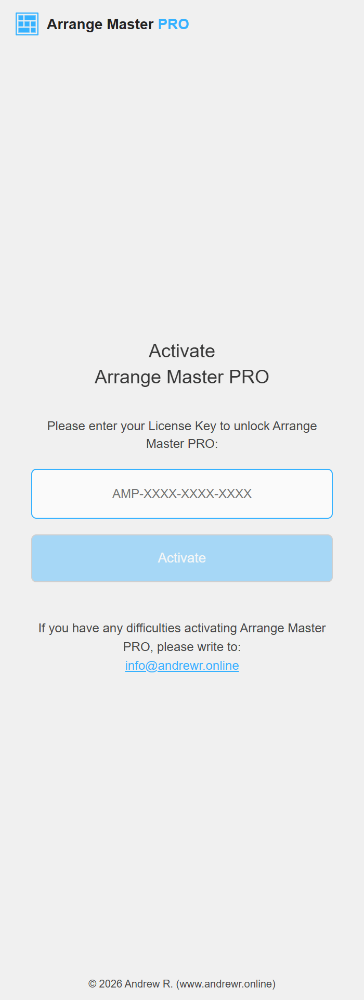
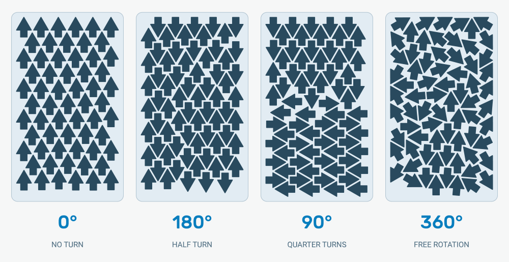
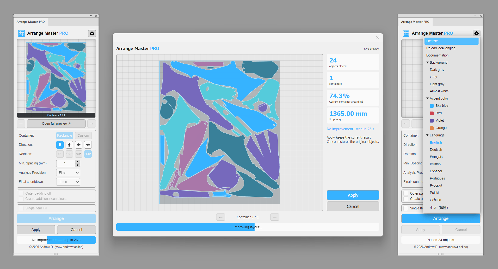

Arrange Master PRO / User guide
Arrange Master PRO
User guide.
Version 1.0.2 · Updated 13 October 2026 · By Andrew R.
Arrange Master PRO places artwork inside a container in Adobe Illustrator. This guide covers the working constraints and checks that matter before printing or cutting.
System requirements
| Component | Requirement | For larger jobs |
|---|---|---|
| Illustrator | Illustrator CC 2018 (22.0) or later with CEP extension support | A current Illustrator version supported by your operating system |
| Windows | 64-bit Windows 10 or 11, Intel / AMD x64 | Windows 11, quad-core processor |
| macOS | A macOS version supported by your Illustrator release; use the supplied macOS package | Check package compatibility with Intel or Apple Silicon before installation |
| Memory | 8 GB RAM | 16 GB or more for complex artwork |
| Display | 1280 × 800 or higher | 1920 × 1080 or higher |
| Internet | Required for activation, license checks and engine loading | |
The Illustrator version range is not a guarantee that every OS, processor and Illustrator combination has been tested. Use the 24-hour demo on the workstation you intend to use.
Installation
The download email contains a link to the Arrange Master PRO package. Download the ZIP, extract it, and choose the installation method for your operating system. Close Illustrator before installing so it can load the new extension files on the next launch.
Windows: the supplied EXE installer
The Windows installer places the panel in the Adobe extension directory and applies the settings supplied with the release. You do not need to copy individual plugin files.
- Save open Illustrator documents and quit Illustrator.
- Extract the downloaded ZIP to a normal folder. Do not run setup from inside the archive.
- Open the Windows installation folder and run the supplied Arrange Master PRO setup executable.
- Follow the installer steps. If another version of PRO is installed, follow the upgrade instructions below.
- Start Illustrator and open Window → Extensions → Arrange Master PRO. In some releases the menu is named Extensions (Legacy).
If Smart App Control blocks the installer
On Windows 11, Smart App Control (SAC) can block the supplied
ArrangeMasterPRO-1.0.1-Setup.exe. It can also block the native
worker after installation: the panel opens, but Arrange fails with
Cannot start the native worker: OS application control or execute permission blocked the binary.
If the Windows notification identifies SAC, use these steps for the official PRO package:
- Save your documents and quit Illustrator. Open Start, search for Windows Security, and open it.
- Choose App & browser control → Smart App Control settings.
- Select Off and confirm the change if Windows asks.
- Run the supplied setup again. If PRO is already installed, restart Illustrator and retry Arrange.
SAC has no exception for an individual app. Turning it off removes this protection for all apps on the PC; it does not turn off your antivirus. Recent Windows updates allow SAC to be enabled again without reinstalling Windows; older versions may require a reset or reinstall. See Microsoft’s SAC FAQ.
If SAC is already off, the setting is unavailable, or the error remains, contact info@andrewr.online with the exact message. On a managed workstation, ask your administrator to check the application-control policy. This launch error does not mean your license has expired.
macOS: Anastasiy’s Extension Manager
On macOS, install the supplied ZXP archive through an Adobe extension manager. There is no separate macOS setup application for PRO.
- Quit Illustrator and extract the download ZIP.
- Install and open Anastasiy’s Extension Manager.
- Drag the supplied Arrange Master PRO ZXP file into its window. Follow the manager’s installation prompts and choose Illustrator if requested.
- Wait for installation to finish, then restart Illustrator.
- Open Window → Extensions → Arrange Master PRO.
Alternative: ZXPInstaller
If you already use ZXPInstaller, open it and drag the supplied ZXP file into its window. Restart Illustrator after it reports that installation is complete. Both managers install the same plugin; using a different manager does not change your license.
If a manager cannot find Illustrator, check that Illustrator has been installed and launched at least once. Confirm that the manager supports your installed Adobe applications, then try the other manager. Contact support with the manager’s exact error if installation still fails.


Opening and docking the panel
Arrange Master PRO opens as an Illustrator panel. Dock it beside your usual production tools or leave it floating. Keep enough panel height to see the preview, settings, and Apply / Cancel controls. The separate full-preview window can be resized for inspection.
The original Arrange Master and Arrange Master PRO are separate extensions. If both are installed, choose Arrange Master PRO from the Extensions menu; a standard Arrange Master key belongs to the standard plugin.
Upgrading and complete uninstallation
Before replacing a version
Finish the current arrangement with Apply or Cancel, save your document, and close Illustrator. For a major update or an installation problem, remove the previous PRO package before installing the replacement. This avoids leaving two copies of the extension in different CEP locations.
Install the new version using the same platform method described above. Keep your license email: reinstalling the panel does not purchase another subscription or extend the paid period.
Windows installer users
- Close Illustrator.
- Open Windows Settings → Apps → Installed apps.
- Find Arrange Master PRO and choose Uninstall. You can also use the uninstaller supplied with its installation.
- After removal, install the new package if you are upgrading.
ZXP manager users
In a manager that supports removal, select Arrange Master PRO under Illustrator and choose Remove. If your manager only installs ZXP files, remove the extension folder manually as described below. Restart Illustrator after installation or removal.
Manual cleanup when a panel remains installed
With Illustrator closed, look for the folder named
com.andrewrybalko.arrangemasterpro in these
locations. Remove that PRO folder only. Do not remove the entire
extensions directory or the original Arrange Master folder.
- Windows — user
%APPDATA%\Adobe\CEP\extensions\- Windows — shared
-
C:\Program Files (x86)\Common Files\Adobe\CEP\extensions\ - macOS — user
-
~/Library/Application Support/Adobe/CEP/extensions/ - macOS — shared
-
/Library/Application Support/Adobe/CEP/extensions/
On macOS, Finder’s Go → Go to Folder command can open the Library paths. On Windows, paste the user path into File Explorer’s address bar. If PRO appears in both the user and shared locations, remove the stale copy before reinstalling.
Uninstalling and subscriptions are separate
Removing local files does not cancel billing on Lava.Top or free an activated device in the license database. Before moving to another computer, open Settings → License → Release this device while the old computer is available. Manage subscription renewal on Lava.Top. If you cannot access the old computer, contact support to review its activation.
Activation and subscription
You receive a PRO key by requesting the full demo or purchasing a PRO subscription on Lava.Top. Enter the key in the plugin, rather than an order number or payment reference.


First activation
- Open Arrange Master PRO with an internet connection available.
- Copy the complete key from your license email into the activation field. Remove accidental leading or trailing spaces.
- Click Activate. Wait for the license check and engine loading to complete.
- When the main panel appears, open a saved Illustrator document and start your first arrangement.
The demo and the paid period
The demo contains all plugin features. It lasts 24 hours from its first activation on one computer. Downloading the archive or receiving the email does not start that timer.
A paid subscription follows the registered billing period. Its start and end dates are not postponed by waiting to enter the key. Solo allows 1 activated computer, Studio 3, and Team 8. All three plans contain the same nesting features.
Keep internet access available for startup checks, periodic license checks, and current engine loading. A saved activation does not turn a time-limited subscription into a permanent license.
Entering another key
Open the gear menu and choose License. You can enter a paid key while a demo is still running. After successful activation, the paid license replaces the current demo on that computer; the demo’s unused hours are not added to the paid period.
You can also enter a different subscription key from this window. Check the dates and available device slots of that key before changing licenses. A key does not acquire a new billing period each time it is activated.
Moving a license to another computer
- On the old computer, finish the active arrangement.
- Open Settings → License and choose Release this device.
- Activate the key on the new computer, provided the subscription is valid and has an available slot.
Releasing a device removes its license activation. It does not change that computer’s hardware identity, erase its trial history, or create another free demo.
Renewal and cancellation
When a successful renewal is registered, the paid period is updated. Check the license status if the panel reports that the period has expired. If you have a payment receipt but the new period is missing, send the purchase email address, receipt reference, and payment time to support.
Stopping automatic renewal prevents a later charge; it does not itself extend the license or remove the already registered paid period. Uninstalling the plugin is not a subscription-cancellation method.
How Arrange Master PRO works
Arrange Master PRO places selected artwork inside a container in Illustrator. You choose the usable material boundary, the objects to place, and the spacing and rotation allowed by the job. The result stays in your Illustrator document for inspection and production.
The container and the items
Select the intended container together with the items. Keep the container larger than an individual item so it can be recognised as the boundary. In Rectangle mode, use a rectangular sheet or roll area. In Custom mode, use the intended vector boundary for shaped stock or an offcut. Check the recognised container in the preview before continuing.
Do not select unrelated artboards, page labels, background rectangles, or marks that should remain outside the arrangement. A boundary drawn in Illustrator represents usable material; it does not include a machine’s unprintable or uncuttable margins unless you account for them.
What should move as one item?
A sticker can contain print artwork, a contour-cut path, white ink and a QR code. These parts must remain aligned. Prepare related artwork as an intact item and keep its production layers organised. The plugin recognises supported paths, compound paths, groups, clipping masks, symbols and raster images; they do not all need to be converted to one kind of object.
A raster image is placed by its rectangular boundary. A clipping mask defines the visible boundary of clipped artwork. For contour-cut work, use a clean closed cut outline. Check live effects, open contours and opacity masks on a small selection before running a large job.
The original artwork and the working arrangement
As in Arrange Master, the work is organised into a session. Your starting artwork is retained while you inspect a working arrangement. You can change the placement settings, compare results, and then choose whether to commit or cancel. The calculation finishing is not the same as applying the result.
Layer Structure Retention keeps recognised production elements on their corresponding layers when the arrangement is applied. It preserves an organised file; it does not repair print and cut artwork that was already misaligned before the session began.
The arrangement workflow: understanding sessions
A session starts when you click Arrange for a prepared selection. It belongs to the document where you started it. Save the document first, and finish the session deliberately with Apply or Cancel.
1. Prepare and select
- Open a saved copy of the production file.
- Confirm that related print and cut elements are aligned and that linked images are available.
- Select the container and the items. Leave unrelated references outside the selection.
- Turn off Single Item Fill for a mixed set of different objects.
2. Set the production constraints
Choose Rectangle or Custom, the collection direction, permitted rotation, and minimum spacing. Check the unit shown beside Min. Spacing. Set these from the material and machine requirements before judging how tightly the objects fit.
3. Run Arrange and inspect the preview
Click Arrange. The plugin prepares the selection, searches for a placement and updates the preview. A more complex selection can take longer to prepare than a set of simple shapes. Use the preview to inspect the layout; do not infer cutting safety only from how dense a small thumbnail looks.
Open Open full preview for a larger view. If the job uses additional containers, use the container arrows to inspect each one. Check the parts near the boundary and inside openings, not just the first sheet.
4. Compare another arrangement within the session
You can change spacing, rotation, collection direction or other placement settings and click Arrange again. This keeps the comparison within the same session. Compare results using the same usable material dimensions unless changing those dimensions is the intended test.
If you need a different source selection or a different document, finish the current session first. Do not delete or ungroup session artwork while the plugin is working.
5. Apply or Cancel
| Control | What it does |
|---|---|
| Arrange | Starts a session or recalculates the current selection with the chosen settings. |
| Apply | Commits the inspected working arrangement to the document and finishes the session. Use it when the button is available and the result is ready. |
| Cancel | Stops the current work, discards the session’s arrangement and restores the starting artwork. |
Always finish with Apply or Cancel before closing the panel, replacing plugin files, or moving to another document.
If you switch documents or interrupt a session
If Illustrator is showing another document, return to the document where Arrange was started before applying or cancelling. PRO checks the active document; it does not apply that session to another file.
After an interrupted session, reopen the original document and the PRO panel, then inspect the recovered state. Avoid manually removing unfamiliar temporary groups or hidden artwork. If the state is unclear, keep a saved copy and contact support before continuing.
Prepare the layer structure
Retain separate print, cut, white-ink, engraving, guide and code layers where the job needs them. Keep related elements aligned before arranging. Use intact groups for multipart artwork that must stay together.
PRO retains the recognised layer structure when applying placement. It does not guess how to repair an already mismatched print and cut file. After arranging, toggle the production layers and inspect registration, spot colours, overprint settings and locked reference elements in Illustrator.

Containers and direction
Rectangle is suitable for a sheet or fixed-width strip. Custom uses a selected vector boundary for shaped stock or offcuts. Choose a clear closed path; inspect complex compound boundaries in the preview.
Direction selects the edge toward which the layout is collected: down, up, right or left. For a roll, keep the usable width fixed and compare occupied length. For sheets, compare the number of containers and whether the leftover area is reusable.
Outer padding off changes whether spacing is applied at the container edge. Turn it off only when the material and machine permit the objects to approach that boundary.
Create additional containers continues a job on matching new containers when not all selected artwork fits. Inspect each container rather than only the first preview.

Rotation and minimum spacing
- 0°: preserve every item’s orientation.
- 180°: allow a half-turn while keeping its axis.
- 90°: allow orthogonal quarter-turns.
- 360°: allow free rotation when the material and artwork permit it.
Textile grain, brushed finishes, directional prints and lettering can restrict rotation. Use the narrowest permitted set, not automatically 360°.
Min. Spacing uses the document’s units. The control accepts values down to 0.001; this is an input limit, not a safe cutting distance. Choose the clearance from your production requirements, including tool width, bleed and handling room.


Analysis precision and final countdown
Analysis Precision controls how closely the outline is analysed. Start with a practical setting, then use finer analysis for curved or detailed cut paths where the additional work is useful.
Final countdown determines how long the search may continue after the progress conditions trigger that phase. A longer countdown can help difficult sets but should be judged against the material improvement it actually produces. Use Apply when a suitable result is ready; Cancel restores the starting arrangement.
Single Item Fill
Select one source item and the container, then enable Single Item Fill. The plugin creates repeated placements and evaluates suitable patterns for that shape. Rotation settings still matter: alternating copies require the corresponding turn to be allowed.
Check copy count, spacing and bleed in the preview. Keep the source artwork grouped if its print and cut elements must repeat together. If this is the only feature you need, Arrange Master also provides Single Item Fill.

Panel appearance and language
Open the gear menu. Choose Background, Accent color and Language to suit your workspace. Open License at the top of the menu for activation information. Reload local engine is available if support asks you to refresh the local engine.


Production practices
- Compare the same job. Keep scale, container, rotation and clearance identical when measuring an improvement.
- Keep cut contours simple. Remove stray points, accidental duplicate paths and unintended open ends.
- Plan bleed and weeding. The closest possible placement is not always the easiest to finish.
- Check references. Confirm registration marks, guides, QR codes and excluded reference objects before output.
- Keep linked images available. Resolve missing links before arranging a print job.
- Inspect problematic effects. Live opacity masks and gradient meshes can need preparation or expansion in a saved copy.
- Use the right output software. PRO prepares the layout. Your RIP and machine software still control print and cutting settings.
Troubleshooting and support
Start with the symptom you can see. A missing panel, a rejected key, a local file-permission error and an unexpected arrangement have different causes. Keep the exact message, including any file path or error code.
The panel is absent from the Extensions menu
- Quit and restart Illustrator after installation.
- Check Window → Extensions and, where present, Extensions (Legacy).
- Confirm that the manager installed Arrange Master PRO for the Illustrator version you are launching.
- Check for duplicate PRO folders in the user and shared CEP locations listed under removal.
- Reinstall using the supplied Windows setup or the macOS ZXP manager.
If the panel is still absent, send support the Illustrator version, operating system, installation method, and the manager’s result. An old standard Arrange Master installation does not replace the PRO package.
The CEP panel opens but stays blank
Close Illustrator and reinstall the complete package. Do not copy only an HTML file or an executable into an existing installation. Check whether your security software blocked one of the installed files and whether your user account can read the extension folder.
On macOS, if the extension manager or the system reports that a package is quarantined or cannot be verified, keep that exact message and contact support for the installation steps appropriate to the supplied release. On Windows, use the official setup rather than applying registry changes for an unrelated CEP version.
If only PRO is blank, check its installation first. If every CEP extension is affected, include that fact in your report: it helps distinguish a plugin installation problem from an Illustrator or CEP issue.
The activation key is rejected
- Use the PRO key from the license email, not a standard Arrange Master key, Lava.Top invoice ID or email address.
- Copy the complete key and remove accidental spaces.
- Check that its registered period has not ended.
- For a device-limit message, release an old activation or contact support if that computer is unavailable.
- For a connection error, check internet access before trying the key again.
Open Settings → License to retry or enter another valid key. Reinstalling the panel does not reset demo eligibility or add device slots.
Activation succeeds, but the engine will not load
Keep Illustrator connected while the plugin finishes loading. Check the exact error rather than repeatedly activating another key. If the package reports a file-integrity error, reinstall the supplied release and do not modify files inside it. If a local engine refresh is needed, finish the session first and use Settings → Reload local engine.
EACCES: access denied
This normally identifies a local file or folder the current user cannot access. Read the path in the message, check its permissions and review security-software protection history. If the affected location belongs to the plugin installation, close Illustrator and reinstall with the supplied method. Switching networks will not fix a local permission problem.
ECONNREFUSED or another connection error
Check whether a firewall, proxy or security application is
refusing the connection. Where required by your workstation
policy, allow Illustrator and its CEP process to make the
necessary connections. On Windows those applications include
Illustrator.exe and CEPHtmlEngine.exe.
If you use a proxy client, confirm that it is running and accepting connections at its configured address and port. Compare the result on another permitted network to identify a network restriction. Keep the system clock correct, because an incorrect date can also affect secure connections and license checks.
The container or the layout is unexpected
Check the selected boundary, Rectangle / Custom mode, item grouping, units, rotation and spacing. Remove unrelated selected rectangles and reference objects. For Custom mode, inspect closed contours, compound openings and the clipping path. A smaller test selection often identifies the item causing the problem.
For live opacity masks, meshes or complex effects, try a prepared copy of the file rather than changing the only production master. Resolve missing image links. If ruler units change while the panel is open and its label is out of date, finish the session and reopen the panel before entering a clearance.
Some objects do not fit
Check whether an item is larger than the usable container under every permitted rotation. Increasing search time cannot make an oversized part fit. Review spacing and orientation against the actual job, or enable Create additional containers when the remaining items should continue onto more material.
The license email or renewal is missing
Check spam and the address entered on Lava.Top or the demo form. Contact info@andrewr.online with the purchase email, plan, payment time and receipt reference. Do not buy another subscription just to retry delivery.
What to send with a support request
- Your OS and Illustrator version, plus the PRO version shown in the package.
- The exact message and a screenshot of the panel.
- The steps that lead to the problem, including whether it happens in a new simple document.
- A small reproducible file you are allowed to share, if the issue concerns artwork.
- Your purchase email and receipt reference for a license issue. Do not include card details.
For help with a specific job, write to info@andrewr.online. Keep a saved copy of the affected document while the problem is being checked.
Changelog
Version 1.0.2 · October 13, 2026
Maintenance update. Added support for correctly processing transparency masks. Support for older versions of CEP 8 and CEP 9.
Version 1.0.1 · October 9, 2026
Maintenance update. Updated internal plugin support systems and optimized temporary file creation and operation logging.
Version 1.0.0 · October 5, 2026
Initial public release of Arrange Master PRO for Adobe Illustrator on Windows and macOS, with a native nesting engine.
- True-shape nesting in rectangular or custom containers, with Layer Structure Retention to keep related print, cut and reference artwork together in its original layers.
- Single Item Fill for repeated designs and additional containers for jobs that need more than one sheet.
- A complete arrangement workflow with panel and full-window previews, Apply / Cancel controls, and a customisable interface with multiple languages.
- Full 24-hour demo and Solo, Studio or Team subscriptions, with activation and device management in Settings.
Need help with a specific file? Contact info@andrewr.online with a description and a small reproducible example you are allowed to share.